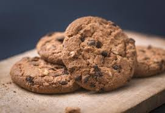
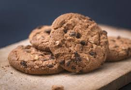
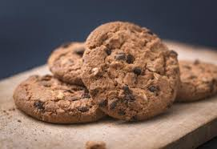
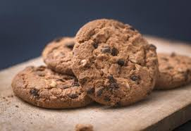

O melhor café da cidade
O clássico café expresso, forte e encorpado.
Café com leite vaporizado e espuma cremosa.
Café suave com bastante leite vaporizado.
Bolo caseiro de cenoura com cobertura de chocolate.
Delicioso cookie com pedaços de chocolate belga.
Quer reservar uma mesa ou saber mais? Entre em contato conosco!
Email: contato@cafeconforto.com
Telefone: (24) 1234-5678
 


